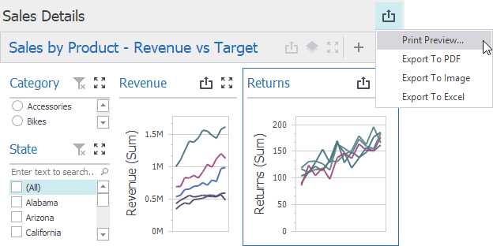
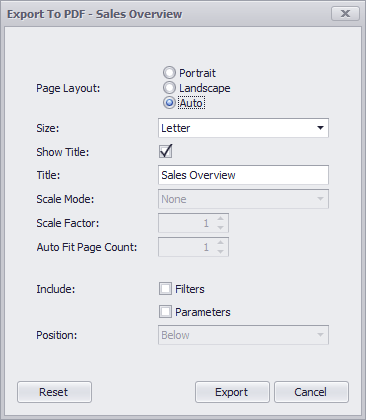
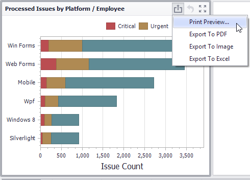

Printing and Exporting
The Dashboard Designer provides the capability to print or export an entire dashboard and individual items.
Printing and Exporting Dashboards
To print or export the entire dashboard, click the button in the dashboard title area and choose the required action.

Print Preview...
Allows you to customize the document before printing/exporting. For instance, the following settings can be changed: the orientation and size of the printed page, page margins, etc.
Export to PDF
Invokes a corresponding dialog that allows you to export a dashboard to a PDF file with specific options. The following options are available.

- Page Layout - Specifies the page orientation used to export a dashboard. You can select between Portrait, Landscape, and Auto. Note that in the Auto mode, page orientation is selected automatically depending on the horizontal and vertical sizes of a dashboard.
- Size - Specifies the standard paper size (for instance, Letter or A4).
- Show Title - Specifies whether or not to apply the dashboard title to the exported document title.
- Title - Specifies the title of the exported document.
Scale Mode - Specifies the mode for scaling when exporting a dashboard.
Note
Note that this option is in effect when Page Layout is set to a value different from Auto.
Scale Factor - Specifies the scale factor (in fractions of 1) by which a dashboard is scaled.
Note
This option is in effect if Scale Mode is set to Use Scale Factor.
Auto Fit Page Count - Specifies the number of horizontal/vertical pages spanning the total width/height of a dashboard.
Note
This option is in effect if Scale Mode is set to Auto Fit to Page Width.
- Include | Filters - Allows you to include master filter values to the exported document.
- Include | Parameters - Allows you to include parameter values to the exported document.
- Position - Specifies the position of the master filter and parameter values in the exported document. You can select between Below and Separate Page.
Export to Image
Invokes a corresponding dialog that allows you to export a dashboard to an image in the specified format. The following options are available.

- Image Format - Specifies the image format in which the dashboard is exported. The following formats are available: PNG, JPEG, and GIF.
- Show Title - Specifies whether or not to apply the dashboard title to the exported document title.
- Title - Specifies the title of the exported document.
- Resolution (dpi) - Specifies the resolution (in dpi) used to export a dashboard.
- Include | Filters - Allows you to include master filter values to the exported document.
- Include | Parameters - Allows you to include parameter values to the exported document.
Export to Excel
Invokes a corresponding dialog that allows you to export dashboard's data to the Excel file. The following options are available:

- Excel Format - Specifies the Excel workbook format in which the dashboard's data is exported. You can select between XLSX and XLS.
- Include | Filters - Allows you to include master filter values to the exported document.
- Include | Parameters - Allows you to include parameter values to the exported document.
- Position - Specifies the position of the master filter and parameter values in the exported document. You can select between Below and Separate Sheet.
Specify the required options in the invoked dialog and click the Export button to export the dashboard. To reset changes to the default values, click the Reset button.
Printing and Exporting Dashboard Items
To print or export a dashboard item, click the button in its caption and choose the required action.

- Print Preview... - Allows you to customize the document before printing/exporting.
- Export to PDF - Invokes a corresponding dialog that allows you to export a dashboard to a PDF file with specific options.
- Export to Image - Invokes a corresponding dialog that allows you to export a dashboard to image in the specified format.
- Export to Excel - Invokes a corresponding dialog that allows you to export a dashboard item's data to the Excel workbook or CSV file.
To learn more about printing/exporting specifics of different dashboard items, see the Printing and Exporting topic for the required dashboard item.